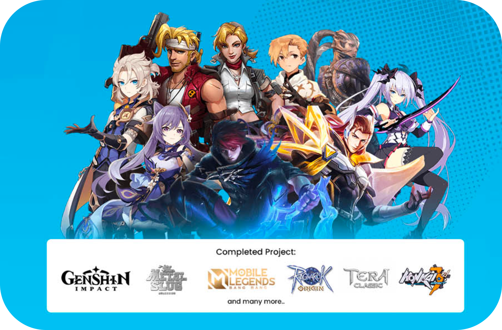
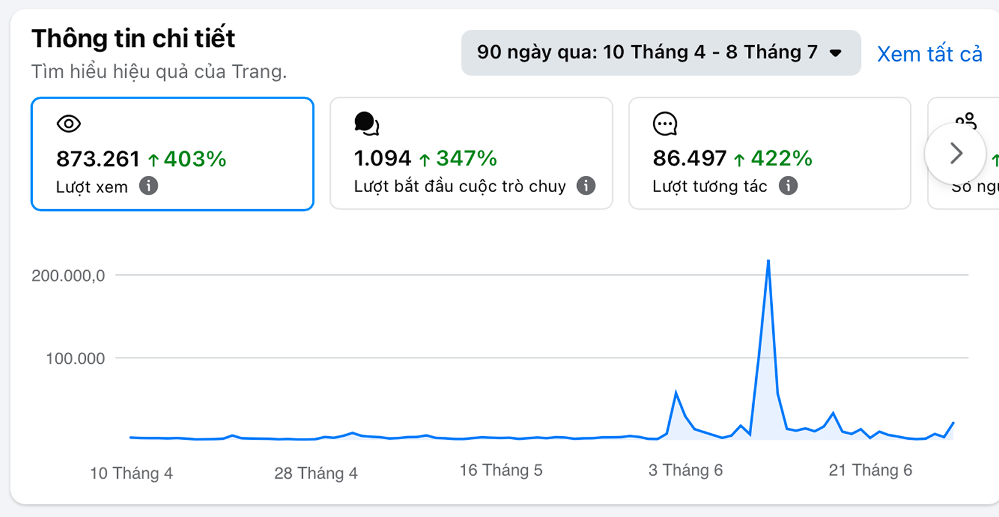
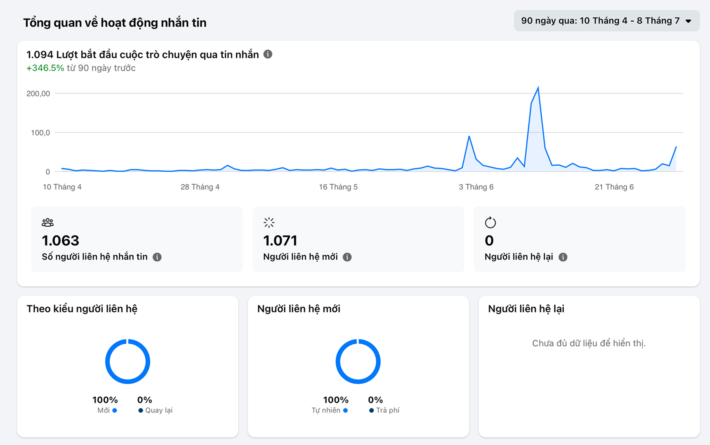
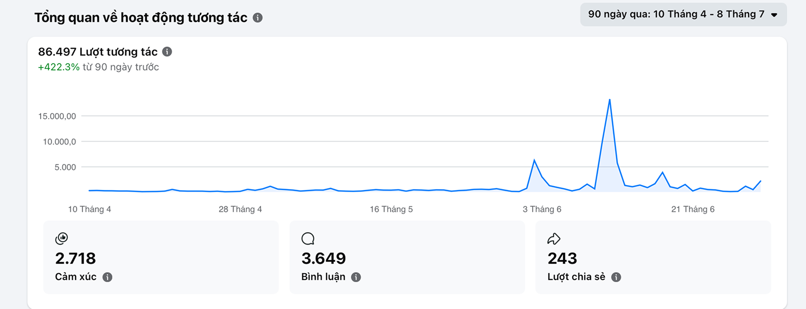
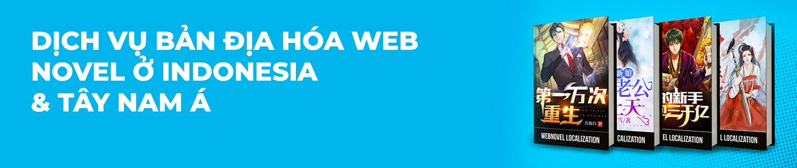
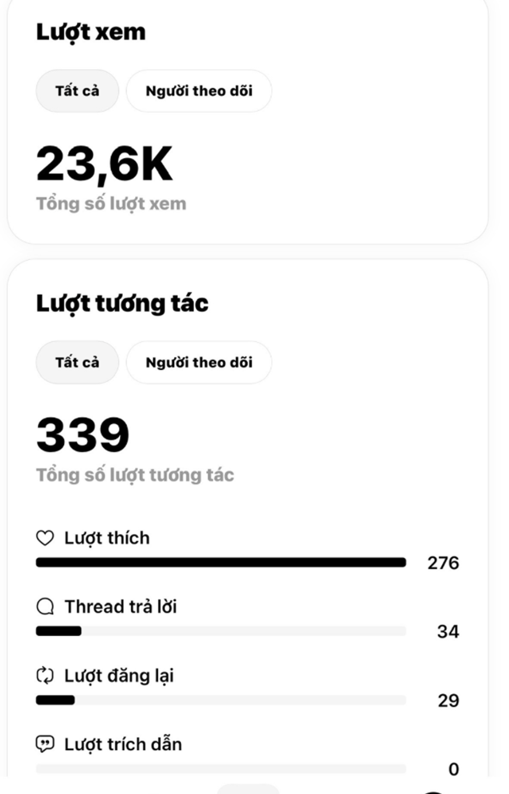

Project 07 / Social media marketing
Digital-trans overview
Digital-Trans is a premier gaming localization and media translation company specializing in the Southeast Asian market. The company provides end-to-end solutions, including game testing, subtitle translation, 24/7 player support, and professional voice-over services.

Driven by the philosophy that marketing must deliver tangible conversions rather than just high engagement, I distributed tailored linguistics and freelancing content across relevant niche communities to target the exact audience.



Threads
Launched and managed the official Threads and Facebook channels for Digital-Trans Vietnam.
Aligned closely with the brand’s core positioning to create highly engaging discussion content centered on linguistics and freelancing topics. Within the first 2 weeks, successfully built early organic momentum on Threads, driving 23.6K views and 339 engagements.

